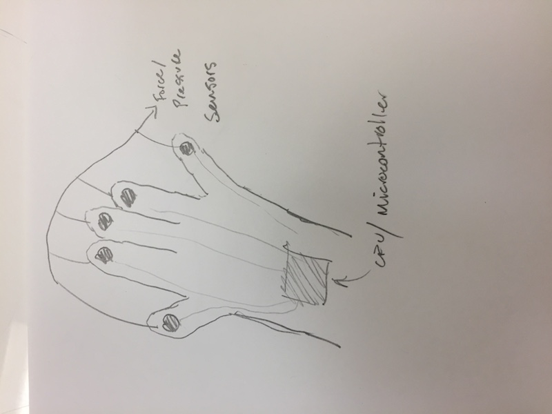
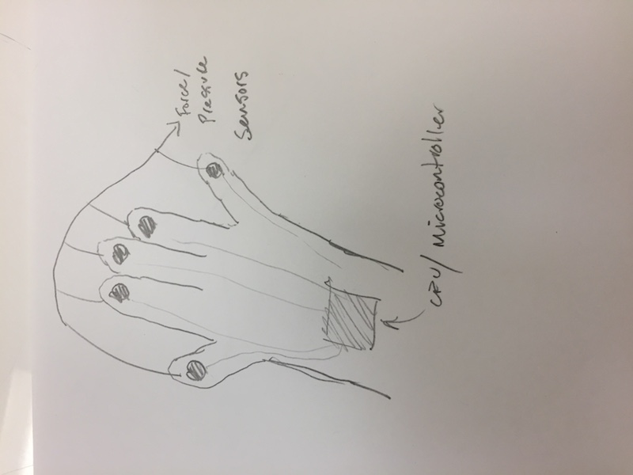

Quicklinks:
Final Project Brainstorming
Coming up with final project ideas is extremely hard. As we learned in the class, the hardest part about innovation is doing something that...
- Is novel
- Is useful to society
- That we have the skills and the timeframe to achieve
Having this in mind, we ended up doing multiple brainstorming sessions with sticky notes on sticky notes on sticky notes.
We first grouped our ideas into problem bins such as "space utilization" and "minimizing distractions." From there, we used a star system to narrow down which one's we liked the most. From there, we started to draw out some sketches about how we expected them to work.
 

Finally, we narrowed the ideas down to these 5 favorites:
- A furniture control device that sends signals to a central control unit. The central control unit would adjust smarthome settings such as temperature, light, music, and other settings.
- A chair or similar piece of furniture that contains embedded pressure sensing devices that also have small actuators. After prolonged use (or prolonged sitting), the actuators would start nudging the user to remind them of taking breaks to get up and move around a little bit.
- A nappack that acts as a backpack and a nap pod. This would allow people to take naps between classes, and would deploy a cone of focus during studying.
- A tranforming desk that adapts to it's use. Would keep track of what objects are on the desk and would move modules around to create the idea work environment with minimal distractions.
- A modular backpack that would have a corresponding physical docking station. Choose which modules you want in your daily backpack: schoolwork modules, gym clothes module, essentials module, etc. The docking system would automatically load and unload the containers that fit in the backpack. The dock would be voice controlled and could sync with one's calendar for inferred pack placement based on one's schedule.
Check out the full ideation presentation (Google Slides) with updated graphics HERE.
Choosing a Final Project
After receiving feedback from our final project idea presentation, we had a hard time choosing which idea to move forward with. The Nappack receieved good feedback, but we were also excited about the concept of the modular backpack.
The main problem with pursuing the modular backpack idea was technological difficulty and project scope. Creating an automatic docking station (which is a core component of the idea) would be fairly difficult and also expensive to execute upon. Additionally, upon further design review, the modules that we though of packing in wouldn't be easily accessible. Most people just dump objects into their bag, and this interaction model of keeping things very orderly in order for the whole system to work seamlessly didn't seem to fit well with people we talked to.
When refining the Nappack idea, we were considering many different ways to deploy such a nap pod / cone. Some of them were resonable but not innovative ~ manual or semi-manual deployment. Some of them were somewhat reasonable ~ embedded air canister helps to inflate a nap-style airbag. Some of them were totally rediculous ~ having spear guns attached to the backpack to shoot hooks that would attach to ceiling and allow one's head and shoulders to stay in place.
After talking about the Nappack more and more, we started to question the innovativeness and usefullness of the concept. Overall, we didn't end up being particularly excited about the idea.
Over the course of a week or two, we decided that we were still really interested in the idea of allowing people to attain certain mental states (such as focused vs sleepy vs excited). Therefore, we pivoted to our current final project: Trancendance.